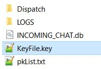

Messenger Application
-
Both the chat application in interactive browsing depend on the Chromium browser extension. The communication between the application and the extension is executed via native messaging. This requires some initial setup: First, restart the External Java Application in the mode BROWSER_NATIVE_MESSAGE instead of BROWSER_CHROME. Second, install the required NativeMessaging files. To automate this process go to settings → Native Messaging Setup. On Windows, this will prompt you to select the python.exe file. On Linux, you need python installed (and accessible in a directory listed in the corresponding $PATH environment vaiable) which should be a part of the default configuration of most Linux distributions.
-
Go to the menu bar at the top, select "Cool stuff" → "Messenger"
-
Selecting the "Messenger" will open the chatting window.
-
To set up the chatting, we need to first understand how the chatting infrastructure works. Open the file APP_DATA which is located where the NinjaPumpkin<platform>.jar is located. Navigate to the "chat" directory. "KeyFile.key" is already generated by the application which is your credential containing your public address, public key and private key. Keep this file secure. Without this file any chat directed to you would be irrecoverable. Provide the public key to the people to who want to send messages to you. "PkList.txt" is a empty file where you have to provide the public keys of the people you want to chat with. "LOGS" contains older chat in plain text as a backup.
 -
This is a snapshot of "pkList.txt". The public keys generated by the CoverUp application are encoded in Base64 format. You can add a new public key by putting it into the text field named "remote public key" and press the button "Add Remote PK". Alternatively you can add a new public key in the file "pkList.txt", each in a new line.
-
This is a snapshot of your key file in JSON format. address is your public address, sk and pk are your private and public key respectively. Keep this file as a backup in a separate location. You should give the pk to the people whom you want to chat with.
-
Now go to the chat application, there is a drop down menu which lists all the public keys in your list including unlisted public keys where you received at least one chat. Switch to different addresses to record chat.
-
Select an address, write in the text box located at the bottom, when you write, the app will also track how much you are writing (marked on the top). Currently we send 512 characters in chat outgoing packets.
-
Hit the dispatch button. In case the browser extension is not running it will show you an error message.